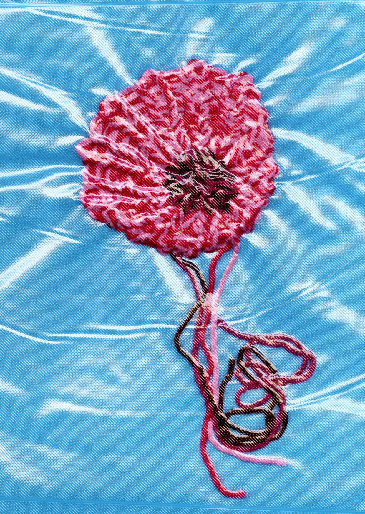
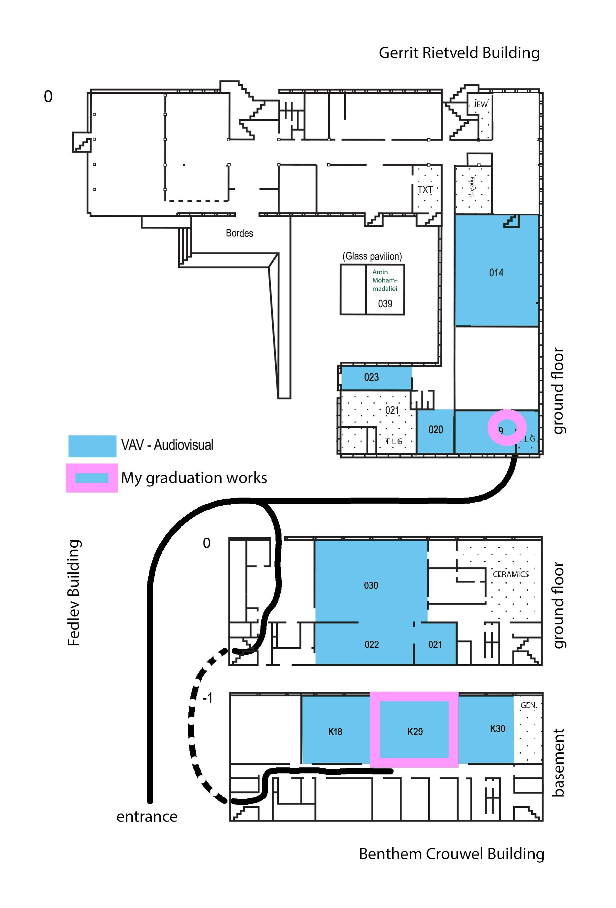

Current



Iteration#1
We are all spatial, and in constant dialogue with the bodies and environments around us — shaping and reshaping one another.
Change unfolds slowly, and often with friction; but through experimentation and persistence, both we and our surroundings can transform.
Come view my work during the Gerrit Rietveld Graduation Exhibition. You can find me in the basement of the Benthem Crouwel building, K29, and on the ground floor of the Rietveld Building, 019.